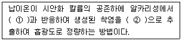
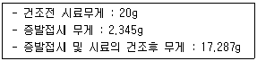

폐기물처리산업기사 (2005-05-29 기출문제)
1과목: 폐기물개론
1. 함수율이 각각 45％와 93％인 도시 쓰레기와 하수슬러지를 함께 매립하려 한다. 쓰레기와 슬러지를 중량비로 8 : 2로 혼합할 때 혼합체의 함수율은?
- 35.4％
- 54.6％
- 62.1％
- 72.1％
(정답률: 알수없음)

2. 메탄의 고발열량 Hh가 9000kcal/Nm3 일 때 저위발열량은?
- 8040kcal/Nm3
- 7940kcal/Nm3
- 8135kcal/Nm3
- 8945kcal/Nm3
(정답률: 알수없음)
3. 쓰레기 수거차 1대가 주당 수거해야할 콘테이너수가 20개이고, 콘테이너 1개를 수거하는데 2시간이 소요된다. 만약 하루 작업시간이 8시간이고, 작업시간 중 15％는 수거이외의 일에 소모한다면 주당 몇 일을 작업해야 하는가?
- 4일
- 5일
- 6일
- 7일
(정답률: 알수없음)
4. 정해진 수거일에 맞추어 쓰레기 저장용기를 연석에 갖다놓으면 수거차량이 용기를 비우고 빈 용기는 주인이 찾아가는 쓰레기 수거형태는?
- set out set back
- curb
- set out
- alley
(정답률: 알수없음)
5. 파쇄처리에 따른 비표면적의 증가효과와 가장 거리가 먼 것은?
- 소각처리시 연소 효율의 향상
- 수거시 비산먼지 발생방지 효율의 향상
- 열분해시 반응 효율의 향상
- 퇴비화시 발효 효율의 향상
(정답률: 알수없음)
6. 폐기물의 성질을 조사하기 위해 시료를 채취하였다. 이 때 사용한 채취 방법으로 원추 4분법을 이용하여 4회 실시한 후 시료를 얻었다. 만일 초기에 조대형 쓰레기를 선별하여 무게를 측정한 결과 60㎏이라면 이 중 몇 ㎏이 시료에 포함되어야 하는가? (단, 조대형쓰레기의 비중은 동일하다고 가정한다.)
- 60㎏
- 15㎏
- 7.5㎏
- 3.75㎏
(정답률: 알수없음)
7. 폐기물의 새로운 수송수단 중 Pipeline 수송에 대한 설명으로 가장 거리가 먼 것은?
- 유지관리, 수송능력 등의 문제를 고려할 때 초기투자비가 높은 방법이라 할 수 있다.
- 자동화 무공해화, 안전화 등의 장점이 있다.
- 조대쓰레기에 대한 파쇄, 압축 등의 전처리가 필요하다.
- 쓰레기 발생밀도가 낮은 곳에서 사용이 가능하다.
(정답률: 알수없음)
8. 수분이 75%인 젖은 쓰레기를 풍건시켜서 수분이 60%로 되었다면 건조전 쓰레기에 비하여 중량은 얼마나 감소되었는가? (단, 쓰레기 비중은 1.0으로 가정한다)
- 7.5%
- 17.5%
- 27.5%
- 37.5%
(정답률: 알수없음)
9. 공정시험법에 따른 폐기물시료의 건조 전·후의 무게차가 0.375kg/kg(시료)이고 회분함량이 23.7%(중량비)라고 하면 가연분 함량은?
- 37.5％
- 38.8％
- 61.2％
- 76.3％
(정답률: 알수없음)
10. 쓰레기 관리체계에서 가장 비용이 많이 드는 과정은?
- 수거 및 운반
- 처리
- 저장
- 처분
(정답률: 알수없음)
11. 어느 시료의 분석결과 수분 5%, 회분 45%, 고정탄소 30%, 휘발분 20%이고 원소분석결과 휘발분중 수소 20%, 황 10%, 산소 30%, 탄소 40% 일 때 저위발열량(kcal/kg)은? (단, 고위발열량 = 4,233 kcal/kg)
- 3649
- 3957
- 3987
- 4012
(정답률: 알수없음)
12. 다음 중 쓰레기의 발생량 조사 방법이 아닌 것은?
- 경향법
- 적재차량 계수분석
- 직접 계근법
- 물질 수지법
(정답률: 알수없음)
13. 폐기물의 관리에 있어서 가장 중점을 두어야 할 우선순위는?
- 재회수, 재이용 및 재활용
- 소각 및 처리
- 발생원에서의 감량화
- 최종 처분
(정답률: 알수없음)
14. 다음 중 자력선별에서 사용하는 자력의 단위는?
- emf
- mV(미리 볼트)
- T(테슬라)
- F(파라데이)
(정답률: 알수없음)
15. 폐기물의 강열감량은 다음 중 어떻게 산출되는가?
- 강열감량 = 수분함량 + 가연분함량 + 회분함량
- 강열감량 = 가연분함량 + 회분함량
- 강열감량 = 수분함량 + 회분함량
- 강열감량 = 수분함량 + 가연분함량
(정답률: 알수없음)
16. 다음의 삼성분 조성을 가진 폐기물 중 저위발열량이 가장 클 것으로 추정되는 것은?
- 70% 수분 + 20% 가연분 + 10% 회분
- 60% 수분 + 15% 가연분 + 25% 회분
- 50% 수분 + 10% 가연분 + 40% 회분
- 40% 수분 + 5% 가연분 + 55% 회분
(정답률: 알수없음)
17. 생활폐기물을 수거 운반하고자 할 때의 고려사항으로 가장 거리가 먼 것은?
- 수거빈도
- 수거거리
- 쓰레기통 모양
- 수거구역
(정답률: 알수없음)
18. 폐기물의 발열량을 측정할 수 있는 방법이 아닌 것은?
- 고형물량 측정을 통한 계산
- 단열열량계 이용
- 쓰레기 조성에 의한 추정식 이용
- 원소분석값을 이용한 계산
(정답률: 알수없음)
19. 적환장에 대한 설명으로 가장 옳은 것은?
- 주위 민원을 피하기 위해 적환방법은 반드시 직접투하식을 택한다.
- 쓰레기를 대용량 용기 및 대형차량으로 수거시 더욱 필요하다.
- 적환장의 위치는 쓰레기 발생량의 무게 중심에 둔다.
- 최종 처분지 근처에 두는 것이 유리하다.
(정답률: 알수없음)
20. 다음 설명 중 옳지 않은 것은?
- man·hour/ton은 수거인부 1인이 1ton의 폐기물을 수거하는데 소요되는 시간을 말한다.
- service/day/truck은 수거트럭 1대당 1일 수거가옥수를 말한다.
- service/man/hour은 수거인부 1인이 1시간에 수거하는 폐기물량을 말한다.
- ton/day/truck은 수거트럭 1대당 1일 수거하는 폐기물량을 말한다.
(정답률: 알수없음)
2과목: 폐기물처리기술
21. 다음 중 같은 조건하에서 혐기성 처리를 할 때 슬러지 생산량이 가장 많은 것은?
- Carbohydrate(탄수화물)
- Protein(단백질)
- Lipid(지방)
- Amino acid(아미노산)
(정답률: 알수없음)
22. 희석포기 방식의 분뇨처리에 있어서 1차 침전지에서 분뇨1000m3/day가 유입하고 희석수 1000m3/day를 사용하여 활성슬러지법으로 처리하여 최종 침전지에서 최고 50%까지 반송한다고 한다. 반송슬러지 펌프의 용량(최고치기준)은? (단, 안전율은 고려하지 않음)
- 0.3m3/분
- 0.5m3/분
- 0.7m3/분
- 1.0m3/분
(정답률: 알수없음)
23. 분자량이 114인 옥탄이 완전연소되는 경우에 공기연료비(AFR,무게기준)은?
- 13kg 공기/kg 연료
- 15kg 공기/kg 연료
- 17kg 공기/kg 연료
- 19kg 공기/kg 연료
(정답률: 알수없음)
24. 40ton/hr 규모의 시설에서 평균크기가 30.5cm인 혼합된 도시폐기물을 최종크기 5.1cm로 파쇄하기 위한 동력요구량(KW)은? (단, 킥의 법칙 적용 : E= C·ln(ℓ1/ℓ2), 평균크기 15.2cm 에서 5.1cm로 파쇄하기 위하여 필요한 에너지소모율은 14.9KW·hr/ton )
- 785
- 894
- 973
- 1089
(정답률: 알수없음)
25. 고화처리방법 중 열가소성 플라스틱법의 장점이 아닌 것은?
- 용출 손실률은 시멘트 기초법에 비해 상당히 낮다.
- 대부분의 매트릭스 물질은 수용액의 침투에 저항성이 매우 크다.
- 높은 온도에서 분해되는 물질에 주로 사용한다.
- 고화처리된 폐기물성분을 회수하여 재활용 할 수 있다.
(정답률: 알수없음)
26. 중유 300kg/hr를 과잉공기계수 1.2로 연소시킬 때 연소실로 주입되는 공기 온도를 20℃에서 220℃로 올리기 위하여 요구되는 열량은? (단, 중유의 저위발열량 10000kcal/kg, 이론공기량은 10Sm3/kg, 공기의 평균 비열은 0.31kcal/Sm3·℃ )
- 203200kcal/hr
- 223200kcal/hr
- 253200kcal/hr
- 293200kcal/hr
(정답률: 알수없음)
27. 스토커 소각로 내에서의 연소공정으로 가장 옳은 것은?
- 건조→휘발성생성→표면승온→착화→고정탄소의 표면연소→불꽃이동연소
- 건조→휘발성생성→표면승온→착화→불꽃이동연소→고정탄소의 표면연소
- 건조→표면승온→휘발성생성→착화→고정탄소의 표면연소→불꽃이동연소
- 건조→표면승온→휘발성생성→착화→불꽃이동연소→고정탄소의 표면연소
(정답률: 알수없음)
28. 퇴비화 공정의 운영인자 중 C/N 비에 관한 설명으로 옳지 않은 것은?
- C는 퇴비화 미생물의 에너지원이며 N는 미생물을 구성하는 인자가 된다.
- C/N가 높을 때(80이상) 질소과잉 현상으로 퇴비화반응이 느려진다.
- 퇴비화 초기 C/N 비는 25~40 정도가 적당하다.
- C/N가 낮을 때(20이하) 유기질소가 암모니아화하여 악취가 발생될 가능성이 높다.
(정답률: 알수없음)
29. 1일 10톤 폐기물을 소각처리하기 위한 노의 용적(m3)은? (단, 저위발열량이 700kcal/kg, 노내 열부하는 20,000kcal/m3·hr, 1일 가동시간 14시간 )
- 15
- 20
- 25
- 30
(정답률: 알수없음)
30. 해안매립공법에 대한 설명으로 옳지 않은 것은?
- 순차투입방법은 호안측으로 부터 순차적으로 쓰레기를 투입하여 육지화하는 방법이다.
- 수심이 깊은 처분장에서는 건설비 과다로 내수를 완전히 배제하기가 곤란한 경우가 많아 순차투입방법을 택하는 경우가 많다.
- 처분장은 면적이 크고 1일 처분량이 많으며 처분장이 평면이다.
- 수중부에 쓰레기를 깔고 압축작업과 복토를 실시하므로 근본적으로 내륙매립과 같다.
(정답률: 알수없음)
31. 3785m3/d 규모의 하수처리장에서 유입수 BOD와 SS의 농도는 각각 200mg/ℓ이고, 1차 침전지에 의하여 SS는 50% BOD는 30%가 제거된다고 할 때 1차 침전지에서의 슬러지양은?
- 2⑤.6kg/d
- 255.6kg/d
- 317.2kg/d
- 378.5kg/d
(정답률: 알수없음)
32. 표면차수막 공법이 아닌 것은?
- 지하연속벽
- 차수시트
- 포장방법
- 어스댐코아
(정답률: 알수없음)
33. 지하수가 침출수로 오염되었을 경우 침출수의 이동속도를 구하기 위해 A, B 지점에서 시추를 한 결과, 두 지점간의 지하수위의 차이가 2m 이고 두 지점간의 거리가 200m 인경우 침출수의 이동속도는? (단, Darcy의 식을 이용하여 계산하시오. 토양의 투수계수는 10-3 m/day, Darcy′s eq : Q=KA(dh/dl))
- 10-2 m/day
- 10-4 m/day
- 10-5 m/day
- 10-7 m/day
(정답률: 알수없음)
34. 일일복토에 사용하는데 가장 적합한 토양은?
- 통기성이 나쁜 점성토계의 토양
- 투수성, 통기성이 좋은 사질토계의 토양
- 부식물질을 적절히 함유한 양토계 토양
- 적당한 규격에 맞춘 slag
(정답률: 알수없음)
35. 고형분 20%의 주방 찌꺼기 12톤이 있다. 소각을 위하여 함수율이 40%되게 건조시켰다면 이 때의 무게는? (단, 비중은 1.0, 건조시 고형분의 손실은 없다.)
- 3톤
- 4톤
- 5.4톤
- 6톤
(정답률: 알수없음)
36. 폐기물 매립지에서 생성되는 가스에 관한 설명으로 옳지 않은 것은?
- 생성가스는 토양입자 사이로 이동한다.
- 토양입자가 수분으로 포화되면 메탄가스의 이동이 곤란하다.
- 생성가스 내의 탄산가스는 물에 용해되어 이동할 수 있다.
- 생성가스 내의 메탄가스는 무색무취이지만 공기 내의 함량이 1∼5%이면 폭발할 수 있다.
(정답률: 알수없음)
37. 하수처리 슬러지의 퇴비화법과 관계가 없는 것은?
- Dano process
- Vertical silo digestion
- Naturalizer
- Dazulyette process
(정답률: 알수없음)
38. 일반적으로 탈수에 이용되지 않는 방법은?
- 부상분리
- 진공여과
- 원심분리
- 가압여과
(정답률: 알수없음)
39. 프로판(C3H8) 1Sm3의 연소에 필요한 이론공기량은?
- 5Sm3
- 7Sm3
- 23.8Sm3
- 33.3Sm3
(정답률: 알수없음)
40. 다음은 퇴비화 과정 중에 출현하는 미생물 및 분해작용에 대한 설명이다. 옳지 않은 것은?
- 퇴비화는 중온균과 고온균이 주된 역할을 한다.
- 고온영역에서는 세균과 방사선균이 분해에 주된 역할을 한다.
- 중온영역에서는 사상균(곰팡이)이 분해에 주된 역할을 한다.
- 초기에는 중온성진균과 세균이 주로 분해에 주된 역할을 한다.
(정답률: 알수없음)
3과목: 폐기물 공정시험 기준(방법)
41. 대상폐기물의 양이 400톤일 때 실험을 위한 시료는 최소한 몇 개가 필요하겠는가?
- 15
- 20
- 25
- 30
(정답률: 알수없음)
42. 원자흡광광도법에서 검량선 작성과 정량법에 대한 설명 중 옳지 않은 것은?
- 정량을 행하는 경우 직선성이 좋은 농도의 영역을 사용하여야 한다.
- 검량선은 적어도 3종류 이상의 농도의 표준시료 용액에 대하여 흡광도를 측정한다.
- 흡광도는 가로대, 표준물질의 농도는 세로대에 취하여 그래프를 그려 작성한다.
- 검량선은 일반적으로 저농도 영역에서는 직선성을, 고농도 영역에서는 휘어진다.
(정답률: 알수없음)
43. 시안을 피리딘-피라졸론법으로 정량 시 황화합물이 함유된 시료는 무엇을 넣어 제거하는가?
- 과산화수소수용액
- 염산용액
- 초산아연용액
- 에틸알콜용액
(정답률: 알수없음)
44. 1N-수산화나트륨 용액 500mL를 조제하는데 필요한 20% W/V 수산화나트륨 용액 양(mL)은? (단, NaOH 분자량 = 40)
- 150
- 100
- 50
- 25
(정답률: 알수없음)
45. 잔류염소가 함유된 시안측정 시료는 잔류염소를 제거하기 위해 무엇을 넣는가?
- 초산아연용액(10W/V %)
- L-아스코르빈산용액(10W/V %)
- 10% 황산제일철 암모늄 용액
- 5% 피로인산나트륨 용액
(정답률: 알수없음)
46. 카드뮴을 원자흡광광도법으로 분석할 때 간섭이 가장 큰 물질은?
- 염화나트륨
- 구리이온
- 염산
- 과염소산
(정답률: 알수없음)
47. 다음 시료채취 시 무색경질의 유리병 만을 사용해야 하는 시료가 아닌 것은?
- 노말헥산 추출물질
- 유기인
- 폴리크로리네이티드비페닐
- 시안화물
(정답률: 알수없음)
48. 다음은 흡광광도법에 의한 납의 측정원리를 설명한 것이다. ( ) 안의 알맞는 시약은?

- ① 디티존, ② 사염화탄소
- ① 디티존, ② 클로로포름
- ① DDTC-MIBK, ② 사염화탄소
- ① DDTC-MIBK, ② 초산부틸
(정답률: 알수없음)
49. 가스크로마토그래피법에 의한 유기인 분석에 대한 설명 중 옳지 않은 것은?
- 시료의 추출을 위하여 크로마토그래피용 노말헥산을 사용한다.
- 검출기는 열전도도 검출기(TCD)를 사용한다.
- 농축장치로 구데르나다니쉬형농축기 또는 회전증발농축기를 사용한다.
- 운반가스는 질소 또는 헬륨을 사용하여 유기인 화합물이 3∼30분간에 유출될 수 있도록 유량을 조절한다.
(정답률: 알수없음)
50. Lambert - Beer법칙에서 강도의 단색광이 정색액을 통과할 때 그 빛의 90%가 흡수된다면 흡광도는?
- 1.0
- 0.8
- 0.6
- 0.4
(정답률: 알수없음)
51. 실험실에서 폐기물의 수분을 측정하기 위해 다음과 같은 결과를 얻었다 폐기물의 수분함량은?

- 25.3%
- 35.5%
- 43.5%
- 50.6%
(정답률: 알수없음)
52. 이온전극법으로 Na+, K+, NH4+ 이온을 측정하는데 가장 적당한 전극은?
- 고체막 전극
- 격막형 전극
- 유리막 전극
- 활성막 전극
(정답률: 알수없음)
53. 기름성분을 분석하기 위한 노말헥산 추출시험법에서 노말헥산을 증발시키기 위한 적용온도는?
- 60℃
- 80℃
- 90℃
- 100℃
(정답률: 알수없음)
54. 시료의 전처리 방법 중 마이크로파에 의한 유기물 분해에 대한 설명으로 옳지 않은 것은?
- 마이크로파 영역에서 극성분자나 이온이 쌍극자 모멘트와 이온전도를 일으켜 온도가 상승하는 원리를 이용한 방법이다.
- 마이크로파를 발생 시키려면 마그네트론을 주로 쓰며 전송에는 입체회로를 주로 쓴다.
- 사용되는 Oven 내부는 내산성을 위해 플루오로카본 등으로 코팅되어 있어야 하고 실험자의 보호를 위하여 내부공기를 2.8m3/min 이상으로 환기를 시켜야한다.
- 밀폐형 용기는 마이크로파를 흡수하지 않는 재질로 200m3의 고온과 120~200psi의 압력에서 견딜 수 있어야하며 주로 PE(Poly ethylene)를 사용한다.
(정답률: 알수없음)
55. 비소의 폐기물공정시헙방법상 측정방법에 대한 설명 중 옳지 않은 것은?
- 염화제일주석으로 시료중의 비소를 3가 비소로 환원시킨다.
- 원자흡광광도법으로 비소를 측정할 때 아세틸렌-아산화질소 불꽃을 사용한다.
- 환원된 3가 비소에 아연분말을 넣어서 비화수소를 발생시킨다.
- 흡광광도법에서는 발생된 비화수소를 디에틸디티오카르바민산은의 피리딘 용액에 흡수시킨다.
(정답률: 알수없음)
56. 가스크로마토그래프법에 관한 사항이다. 다음 검출기 중 유기인화합물의 분석에 가장 적당한 것은?
- 열전도도 검출기
- 전자포획 검출기
- 불꽃광도 검출기
- 불꽃열이온 검출기
(정답률: 알수없음)
57. 수분측정에 관한 사항 중 옳지 않은 것은?
- 시료를 1⑤~110℃의 건조기에서 건조시킨다.
- 시료를 증발접시에 넣어 건조기에서 건조시킨다.
- 방냉은 황산데시케이터안에서 실시한다.
- 시료를 넣은 용기는 하부면적이 좁은 것을 사용한다.
(정답률: 알수없음)
58. 폐기물공정시험법에서 제반시험 조작은 따로 규정이 없는 한 판정기준으로 규정한 온도는?
- 상온
- 실온
- 표준온도
- 수욕상 또는 수욕중
(정답률: 알수없음)
59. 반고상 또는 고상폐기물의 pH 측정시 시료 10g에 증류수 몇 ml를 넣어 잘 교반하여야 하는가?
- 10ml
- 25ml
- 50ml
- 100ml
(정답률: 알수없음)
60. 원자흡광광도법에서 분석의 감도를 높여주기 위한 광학계의 조건으로 옳은 것은?
- 빛이 투과하는 불꽃 중에서의 유효길이를 되도록 짧게한다.
- 불꽃으로부터 빛(光束)이 벗어나지 않도록 한다.
- 가늘고 짧은 세극을 갖는 슬롯 버너를 사용할 경우 불꽃 길이를 20cm까지 길게 할 수 있다.
- 빛을 불꽃 중에 반복하여 투과시키는 모노패스방식을 사용한다.
(정답률: 알수없음)
4과목: 폐기물 관계 법규
61. 폐기물 처리업을 하기 위하여 사업계획서를 제출하여 사업계획 적정통보를 받았다. 허가 신청은 언제까지 하면 되는가? (단, 폐기물 수집, 운반업의 경우)
- 사업계획 적정통보 받은 날부터 6월 이내
- 사업계획 적정통보 받은 날부터 1년 이내
- 사업계획 적정통보 받은 날부터 2년 이내
- 사업계획 적정통보 받은 날부터 3년 이내
(정답률: 알수없음)
62. 지정폐기물 중 감염성폐기물 수집,운반에 관한 설명으로 틀린 것은?
- 감염성폐기물의 운반차량은 섭씨 4도이하의 냉장시설설비가 설치,가동되어야 한다.
- 감염성폐기물의 수집, 운반차량의 차체는 백색으로 도색하여야 한다.
- 감염성폐기물의 수집, 운반차량의 적재함의 양쪽옆면에는 감염성폐기물의 도형, 업소명 및 전화번호를 부착 또는 표기한다.
- 감염성폐기물의 수집, 운반차량의 적재함의 부착 또는 표기하는 글씨의 색깔은 녹색으로 하여야 한다.
(정답률: 알수없음)
63. 지정폐기물중 폐유독물의 처리방법이 아닌 것은?
- 중화·가수분해·산화·환원
- 고온소각처리
- 고온열분해처리
- 고온용융처리
(정답률: 알수없음)
64. 폐기물처리업자 또는 폐기물 재활용 신고자가 휴업 및 폐업 할 경우, 휴업 및 폐업 한 날 부터 며칠 이내에 신고서를 시·도지사 또는 지방환경관서의 장에게 제출하여야 하는가?
- 3일
- 5일
- 10일
- 20일
(정답률: 알수없음)
65. 시간당 처리능력이 25킬로그램 이상 200킬로그램 미만인 소각시설에서 배출되는 다이옥신 측정주기 기준으로 적절한 것은?
- 2월 1회 이상
- 6월에 1회 이상
- 12월에 1회 이상
- 24월에 1회 이상
(정답률: 알수없음)
66. 폐기물처리시설 중 소각시설을 설치, 운영하는 자는 시설에서 배출되는 오염물질의 측정결과를 얼마동안 보존하여야 하는가?
- 6월
- 1년
- 3년
- 5년
(정답률: 알수없음)
67. 환경관리공단에서 교육을 받아야 하는 자로 알맞는 것은?
- 폐기물재활용신고자가 고용한 기술담당자
- 폐기물재활용신고자
- 폐기물수집, 운반업자
- 폐기물처리시설의 기술관리인
(정답률: 알수없음)
68. 관리형 매립시설 침출수 배출허용기준중 중크롬산칼륨법에 의한 화학적산소요구량(mg/L)허용기준에 관한 내용으로 알맞는 것은? (단, 나지역 기준, ( )안에 수치는 처리효율임)
- 300(95%) 이하
- 400(90%) 이하
- 600(85%) 이하
- 800(80%) 이하
(정답률: 알수없음)
69. 다음 중 폐기물관리법령에서 규정하고 있는 화학적 처리시설에 해당하는 것은?
- 열분해시설
- 정제시설
- 고형화시설
- 소멸화시설
(정답률: 알수없음)
70. 폐기물관리종합계획에 포함되어야 할 사항이 아닌 것은?
- 폐기물 발생 및 처리현황
- 종합계획의 기조
- 재원조달 계획
- 종전의 종합계획에 대한 평가
(정답률: 알수없음)
71. 다음 중 소각시설의 검사기관과 가장 거리가 먼 곳은?
- 환경관리공단
- 한국기계연구원
- 산업기술시험원
- 한국건설기술연구원
(정답률: 알수없음)
72. 사업장폐기물의 발생억제를 위한 폐기물발생억제지침 준수의무대상 배출자의 업종이 아닌 것은? (단, 최근 3년간의 연평균 배출량을 기준으로 지정폐기물을 200톤 이상 배출한 자 기준)
- 섬유제품제조업
- 전기가스업
- 기계조립 금속제품제조업
- 전자부품, 영상, 음향 및 통신장비제조업
(정답률: 알수없음)
73. 다음 중 감염성 폐기물을 대상으로 폐기물처리시설이 갖추어야 하는 기술관리인의 자격기준이 아닌 것은?
- 수질환경산업기사
- 폐기물처리산업기사
- 임상병리사
- 위생사
(정답률: 알수없음)
74. 공동관리구역내인 아파트 단지에서 주민이 생활폐기물을 무단투기 하거나 규격봉투를 사용하지 않고 배출하였을 경우 받게되는 행정조치는?
- 50만원 이하의 과태료
- 100만원 이하의 과태료
- 300만원 이하의 과태료
- 1000만원 이하의 과태료
(정답률: 알수없음)
75. 폐기물로부터 에너지를 회수하는 기준에 대하여 설명한 것이다. 올바른 것은?
- 다른 물질과 혼합된 폐기물의 저위발열량이 킬로그램당 3천킬로칼로리 이상일 것
- 에너지의 회수효율이 85 퍼센트 이상일 것
- 회수열의 50% 이상을 열원으로 이용하거나 다른 사람에게 공급할 것
- 환경부장관이 정하여 고시하는 경우에는 폐기물의 30퍼센트 이상을 원료 또는 재료로 재활용하고 그 나머지 중에서 에너지의 회수에 이용할 것
(정답률: 알수없음)
76. 폐기물재활용신고자가 시·도지사로부터 태반을 보관하는 시설을 승인함에 있어 기준에 해당되지 않는 것은?
- 폐기물재활용신고자는 지정폐기물처리 허가를 받은 자일 것
- 태반의 배출장소와 그 태반재활용시설이 있는 사업장과의 거리가 100킬로미터 이상일 것
- 보관시설에서의 태반보관허용량은 5톤 미만일 것
- 보관시설에서의 태반보관기간은 태반이 보관시설에 도착한 날부터 5일 이내로 하도록 할 것
(정답률: 알수없음)
77. 폐기물처리업의 업종구분과 영업내용을 연결한 것으로 알맞지 않는 것은?
- 폐기물수집·운반업 - 폐기물을 수집하여 처리장소로 운반하는 영업
- 폐기물중간처리업 - 폐기물중간처리시설을 갖추고 폐기물을 소각·중화·파쇄·고형화 등의 방법에 의하여 처리하는 영업
- 폐기물최종처리업 - 폐기물최종처리시설을 갖추고 폐기물을 매립 등의 방법에 의하여 처리하는 영업
- 폐기물종합처리업 - 폐기물수집·운반, 중간처리 및 최종처리를 함께 하는 영업
(정답률: 알수없음)
78. 사업장 일반폐기물인 유기성 오니란 고형물중 유기성물질의 함량이 몇 % 이상인 것을 말하는가?
- 30
- 40
- 50
- 60
(정답률: 알수없음)
79. 다음은 멸균분쇄시설의 최초 정기검사와 이후의 정기검사에 관련하여 기술한 것이다. 올바른 것은?
- 최초 정기검사는 사용개시일부터 3월, 2회 이후의 정기검사는 최종 검사일부터 3월
- 최초 정기검사는 사용개시일부터 3월, 2회 이후의 정기검사는 최종 검사일부터 6월
- 최초 정기검사는 사용개시일부터 1년, 2회 이후의 정기검사는 최종 검사일부터 1년
- 최초 정기검사는 사용개시일부터 1년, 2회 이후의 정기검사는 최종 검사일부터 2년
(정답률: 알수없음)
80. 매립시설의 침출수를 측정할 수 있는 기관으로 틀린 것은?
- 환경관리공단
- 환경기술개발및지원에 관한 법률 규정에 의하여 수질오염물질 측정대행업의 등록을 한 자
- 수도권매립지관리공사
- 기타 환경부장관이 정하여 고시하는 기관
(정답률: 알수없음)
함수율 = (쓰레기의 함수율 × 쓰레기의 비율) + (슬러지의 함수율 × 슬러지의 비율)
함수율 = (0.45 × 0.8) + (0.93 × 0.2)
함수율 = 0.36 + 0.186
함수율 = 0.546 또는 54.6%
따라서 정답은 "54.6％"이다.